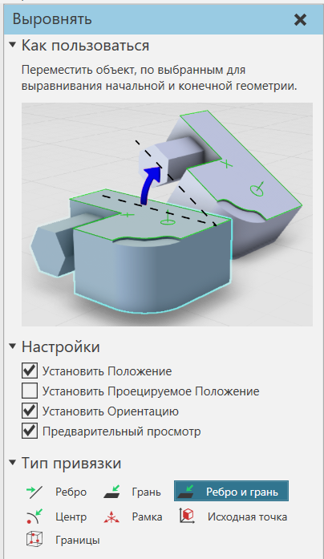

Выравнивание компонентов |
|
Выбранный компонент можно выровнять на основе положения и/или ориентации другой геометрии в трехмерном мире. 1.В трехмерном мире выберите компоненты, которые вы хотите выровнять. 2.На вкладке Главная, в группе Инструменты, нажмите Выровнять . 3.На панели Выровнять измените нужные параметры в Настройки и Тип привязки.
 4.В трехмерном мире щелкните на геометрию относительно которой будут выравниваться выбранный(ные) компонент. Копонент(ы) станет прозрачным. 5.В 3D-мире наведите указатель мыши на геометрию, относительно которой необходимо выровнять компонент(ы), чтобы просмотреть эффект, который действие Выровнять окажет на ваш выбор. 6.Щелкните на место, чтобы выровнять выбранный компонент. 7.Выполните одно или несколько из следующих действий. ·Если вы хотите выйти из команды Выровнять, нажмите ESC или в Выровнять на панели задач щелкните Закрыть . ·Если вы хотите отменить действие действия Выровнять, на ПБД , нажмите Отменить . ·Если вы хотите восстановить эффект отмененного действия Выровнять, на ПБД , нажмите Вернуть. |